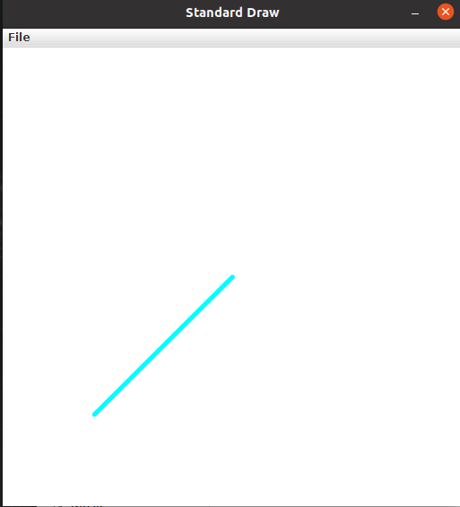

Lab 3: Drawing Shapes with Inheritance (3 Points)
Chris Tralie
Due Tuesday 9/29/2020
Overview / Logistics
The purpose of this lab is to give you practice with the class declarations and inheritance with a visual application. Click here to download the Netbeans starter code for this lab. When you are finished, you should zip it up and submit it on Canvas.
Learning Objectives
- Manipulate public and private variables/methods in classes
- Leverage code sharing between superclasses and subclasses
- Use multiple classes together in concert to accomplish a task
Programming Task
In this lab, you will be designing classes to draw different 2D shapes on the cartesian grid. You will be drawing in a square area where x and y are both between 0 and 1. There is a superclass called Shape which stores the thickness with which to draw the shape and the color to use when drawing the shape, as well as setter methods for these two variables. You should create a subclass of this class for each new shape that you draw. Every shape you draw should be made up of a series of line segments.
There are three shell methods provided in the Shape class which you should override in all of your shapes
draw(): You should draw your shape using a series ofLineSegmentobjectsgetArea(): You should return the area of your shapetoString(): You should return a string with descriptive information about a shape object in each class.
You should also implement setter methods to update all of the parameters of your shape. For example, you should be able to update the center and side length of a square object.
Be mindful of style as you are coding this!
Point (Given Example)
The simplest thing we can draw is a point. Have a look at the provided Point class. Objects of this type will be used in the LineSegment class, and you may also want to use them in your classes.
Line Segment (Given Example)
Study the LineSegment class that was provided with the code, and notice how it leverages code in the super Shape class and in the Point class. You will be doing similar things in the shapes below. You should also use objects of the LineSegment class in the draw methods for your shapes. For instance, a triangle can be drawn with three line segments. Be sure to pass along the correct color and thickness when drawing the line segments
As an example of how to use this class, consider the code below
This will print out the following
Line Segment from Point(0.2, 0.2) to Point(0.5, 0.5)
length = 0.4242640687119285
And it will draw a picture that looks like this.
Task 1: Triangle
You should create a class called Triangle which stores six pieces of information in addition to the color and thickness. In particular, you will need an x and y coordinate for each of three different points. There are a variety of ways to organize this class, but he most succinct way is to simply store the three line segments making up the triangle as private variables and to use their methods when drawing and computing the area.
To compute the area of a triangle, you can use Heron's formula. If a, b, and c are the three lengths of the triangle, then define the semi-perimeter as
\[ s = \frac{a+b+c}{2} \] Then, the area of the triangle can be computed as \[ A = \sqrt{ s(s-a)(s-b)(s-c) } \]
As an example, below is a picture of a triangle with points (0.1, 0.1), (0.5, 0.9), (0.8, 0.2). It should have an area of 0.26
Task 2: Square
Create a class called Square which stores the center of the square and the length of its sides. Recall that the area of a square is its side length squared (hence the name "square"). Below is an example of a blue square of thickness 0.005 centered at (0.4, 0.4) with a side length of 0.2 and a red square of thickness 0.01 centered at (0.6, 0.6) with a side length of 0.3.
Task 3: Circle
Create a class called Circle which stores the center of a circle and its radius. Recall that the area of a circle of radius r is
\[ \pi r^2 \]
A circle would require an infinite amount of line segments to draw properly, but you can draw an approximate circle as a regular polygon with many sides. You can specify the number of sides to draw as a parameter to the constructor. If you have N sides for a circle of radius r centered at (cx, cy), then you can generate the coordinates of the ith point as
\[ x = cx + r* \cos \left( \frac{2 \pi i}{N} \right) \]
\[ y = cy + r* \sin \left( \frac{2 \pi i}{N} \right) \]
Then simply connect these points with line segments in a loop to form an approximate circle drawing. You can use Math.cos, Math.sin, and Math.PI to help you.
Below is an example of drawing two circles with this class. The first circle is centered at (0.3, 0.7) with a radius of 0.2, using 15 points, a line width of 0.01, and the color orange. The second circle is centered at (0.8, 0.3) with radius of 0.1, using 100 points, a line width of 0.005, and the color pink.
Task 4: Putting It All Together
Fill in some code in MyDrawing.java to draw at least one of each shape you've created before your final submission. You may actually want to make an interesting drawing, but that's not required here.